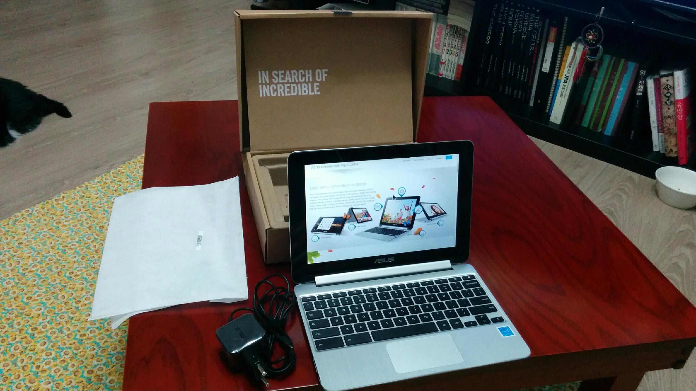
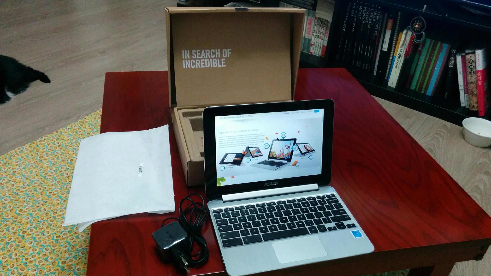

ASUS Chromebook Flip C100PA DS03
장점
리눅스 + 싸다 + 안드로이드 앱 구동 + 긴 구동시간 + 크롬브라우저의 사용성을 극대화 시켜주는 키보드

단점
ARM Cortex-A17 의 한계
- Crouton + Linux 조합으로 x86 프로그램 구동 불가능.
- Docker 설치 불가 최신 Raspberry Pi에서는 사용가능 한듯
bluedskim@gmail.com
리눅스 + 싸다 + 안드로이드 앱 구동 + 긴 구동시간 + 크롬브라우저의 사용성을 극대화 시켜주는 키보드
